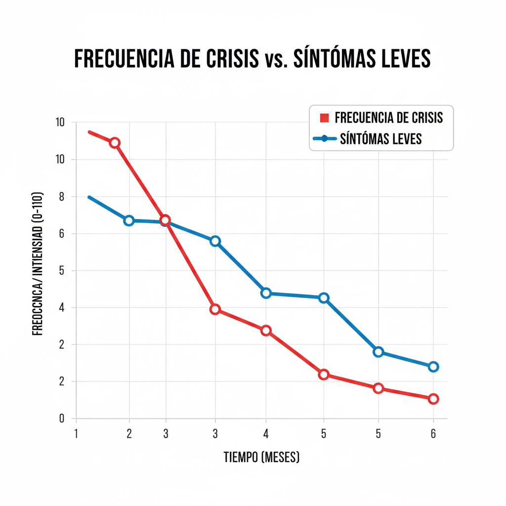

Información del Paciente
Mariana Pérez (12 años)
Información General
Nombre: Mariana Pérez
Edad: 12 años
Sexo: Femenino
Diagnóstico: Asma Moderada
Inhalador: Budesonida 200mcg
Alertas recientes
😷 Omisión Crítica de Dosis: 20/11/2025 - 08:00 AM
Ver alerta🚨 Crisis Severa: 18/11/2025 - 11:30 AM
Ver alerta📉 Ataque Leve: 14/11/2025 - 04:00 PM
Ver alertaTendencia de Adherencia y Síntomas
Bitácora de Crisis y Eventos (HU-49)
Crisis Severa
Desencadenante: Alergia al polen. Uso de 3 dosis de rescate.
Ataque Leve
Desencadenante: Ejercicio físico intenso. Uso 1 dosis de rescate.
Bitácora Detallada de Rescate (HU-23)
| Fecha/Hora | Dosis | Motivo |
|---|---|---|
| 20/11/2025 4:00 PM | 1 Inhalación | Ejercicio |
| 18/11/2025 11:45 AM | 2 Inhalaciones | Crisis Severa |
| 18/11/2025 11:30 AM | 1 Inhalación | Crisis Severa |
| 15/11/2025 8:00 AM | 1 Inhalación | Tos matutina |
💡 Patrón de Riesgo (HU-20): La mayoría de las crisis severas ocurren entre 10 AM y 1 PM.